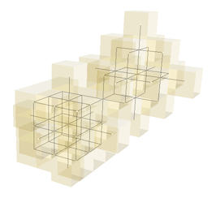
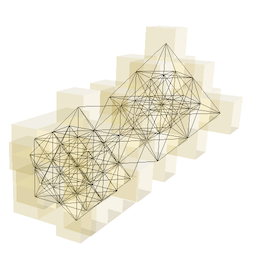
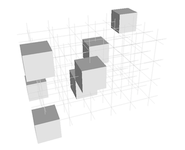
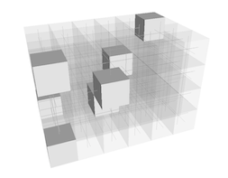
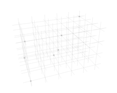
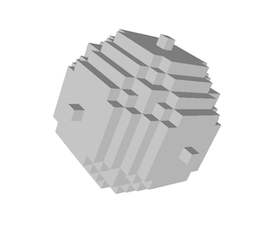
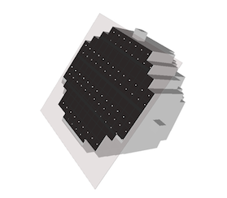
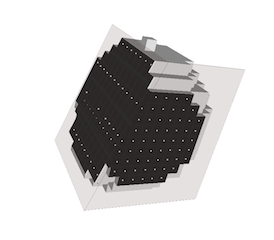

|
DGtal 0.3.0
|
This part of the manual describes how to visualize 3D objects and how to import them from binary file (.obj or pgm3d)
Table of contents:
First to use the DGtalQGLViewer stream, you need to include the following hearders:
#include "DGtal/3dViewer/DGtalQGLViewer.h"
LibQGLViewer ( http://www.libqglviewer.com ) is a C++ library based on QT allowing to access to simple 3D fonctionalities like camera moving, mouse, keyboard interaction, clipping plane .... etc. The class DGtalQGLViewer inherits from the base class QGLViewer (which is based on QGLwidget). It permits to display simple 3D shapes.
The following code snippet defines three points and a rectangular domain in Z3. It then displays them in a DGtalQGLviewer object. The full code is in dgtalQGLviewer-1-points.cpp.
The first step to visualize 3D object with DGtalQGLViewer is to create a QApplication can be done as follows:
and then in the main():
using namespace DGtal; using namespace Z3i; QApplication application(argc,argv); DGtalQGLViewer viewer; viewer.show(); Point p1( 0, 0, 0 ); Point p2( 5, 5 ,5 ); Point p3( 2, 3, 4 ); Domain domain( p1, p2 ); viewer << domain; viewer << p1 << p2 << p3; viewer << << DGtalQGLViewer::updateDisplay;
You should obtain the following visualisation:
Digital point visualization with DGtalQGLViewer.
The DGtalQGViewer class allows also to display directly a DigitalSet. The first step is to create a DigitalSet for example from the Shape class.
QApplication application(argc,argv); DGtalQGLViewer viewer; viewer.show(); Point p1( 0, 0, 0 ); Point p2( 10, 10 , 10 ); Domain domain( p1, p2 ); viewer << domain; DigitalSet shape_set( domain ); Shapes<Domain>::addNorm1Ball( shape_set, Point( 5, 5, 5 ), 2 ); Shapes<Domain>::addNorm2Ball( shape_set, Point( 3, 3, 3 ), 2 ); shape_set.erase(Point(3,3,3)); shape_set.erase(Point(6,6,6)); viewer << shape_set << DGtalQGLViewer::updateDisplay
You should obtain the following visualisation (see example: dgtalQGLviewer-2-sets.cpp ):
Digital point visualization with DGtalQGLViewer.
As for DGtalBoard, a mode can be choosed to display elements (SetMode3D). You just have to specify the classname (the easiest way is to call the method styleName() on an instance of the correct type and the desired mode (a string).
Object6_18 shape( dt6_18, shape_set ); viewer << SetMode3D( shape.styleName(), "DrawAdjacencies" ); viewer << shape;
or change the couple of adjacency
Object18_6 shape2( dt18_6, shape_set ); viewer << SetMode3D( shape2.styleName(), "DrawAdjacencies" ); viewer << shape2;
You should obtain the two following visualisations (see example: dgtalQGLviewer-3-objects.cxx ):

6-18 digital Adjacencies visualization with DGtalQGLViewer. |

18-6 digital Adjacencies visualization with DGtalQGLViewer. |
Note that digital set was displayed with transparency by setting a custom colors.
As for DGtalBoard the object can be displayed with different possible mode:
The file dgtalQGLviewer-4-modes.cxx illustrates several possible modes to display these objects:
We can display the set of point and the domain
Point p1( -1, -1, -2 ); Point p2( 2, 2, 3 ); Domain domain( p1, p2 ); Point p3( 1, 1, 1 ); Point p4( 2, -1, 3 ); Point p5( -1, 2, 3 ); Point p6( 0, 0, 0 ); Point p0( 0, 2, 1 );
without mode change (see image (a)):
viewer << p1 << p2 << p3<< p4<< p5 << p6 << p0; viewer << domain;
We can change the mode for displaying the domain (see image (b)):
viewer << p1 << p2 << p3<< p4<< p5 << p6 << p0;
viewer << SetMode3D(domain.styleName(), "PavingGrids");
viewer << domain;
(Note that to avoid transparency displaying artifacts, we need to display the domain after the voxel elements included in the domain)
It is also possible to change the mode for displaying the voxels: (see image (c))
viewer << domain;
viewer << SetMode3D( p1.styleName(), "Grid" );
viewer << p1 << p2 << p3<< p4<< p5 << p6 << p0;
we obtain the following visualisations:

(a) Default visualisation of a digital point sets with the associated domain |

(b) Visualisation using Paving mode for the domain. |

(c) Visualisation using Paving mode for the voxels. |
As for DGtalBoard, it is possible to custom the way to display 3D elements by using an instance of the following classes:
The custom color can be applied by an instance of the CustomColors3D as follow:
viewer << CustomColors3D(QColor(250, 0,0),QColor(250, 0,0)); viewer << p4 << p5 ;
The example dgtalQGLviewer-5-custom illustrates some possible customs :
Example of several custom display .
Example of several custom display .
It also possible through the stream mechanism to add clipping plane with the object ClippingPlane. We just have to add the real plane equation and adding as for displaying an element. The file dgtalQGLviewer-6-clipping.cpp gives a simple example.
From displaying a digital set defined from a Norm2 ball,
Point p1( 0, 0, 0 ); Point p2( 20, 20, 20 ); Domain domain(p1, p2); DigitalSet shape_set( domain ); Shapes<Domain>::addNorm2Ball( shape_set, Point( 10, 10, 10 ), 7 );
we can add for instance two differents clipping planes:
viewer << ClippingPlane(1,0,0,-4.9); viewer << ClippingPlane(0,1,0.3,-10);

(a) Visualisation of the initial set. |

(b) Visualisation after adding the first clipping plane (0,1,0.3,-10). |

(c) Visualisation after adding a second clipping plane (1,0,0,-4.9) . |
 1.7.3
1.7.3